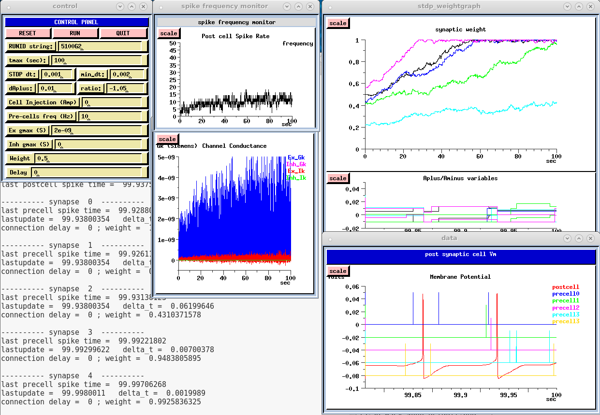
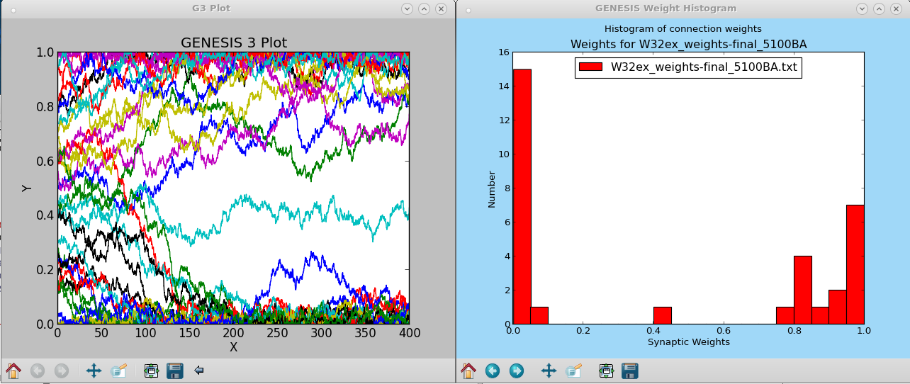
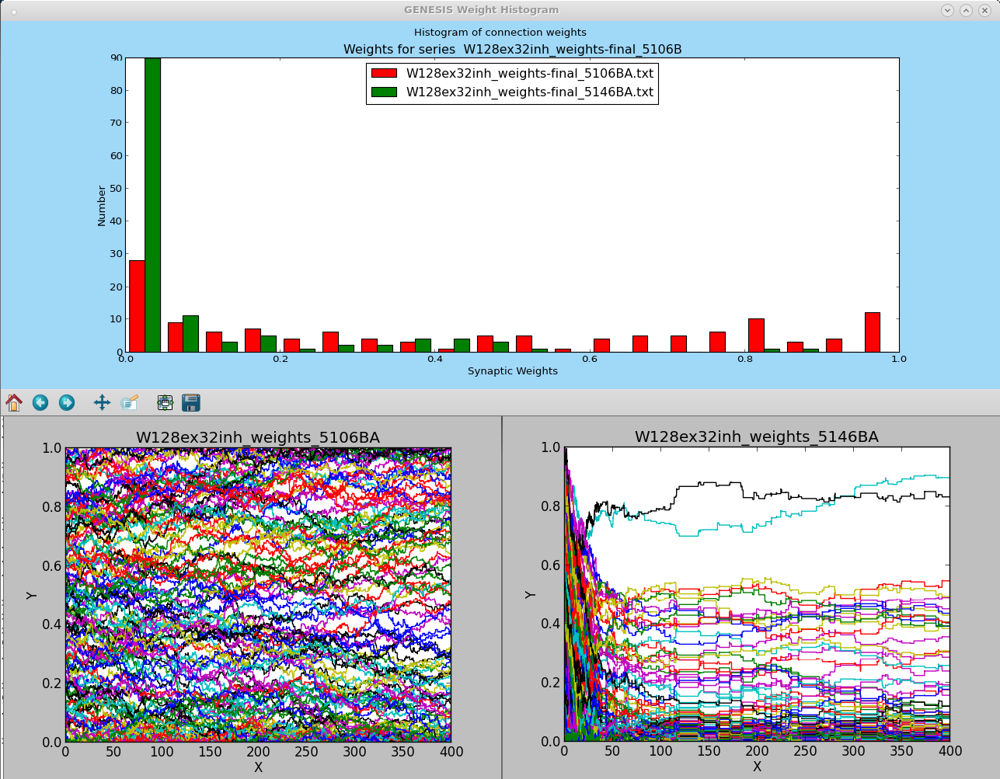

This directory contains example and test scripts for the stdp_rules object. To fully understand these scripts, you should first consult the documentation for the object in Doc/stdp_rules.txt.
These simulations use the GENESIS 2.4 'stdp_rules' object to create versions of the Song, Miller, and Abbott (SMA) model for Spike Timing Dependent Plasticity (STDP). The original model that is described in the Methods section of Song et al (2000) has a single cell with 1000 excitatory synapses and 200 inhibitory synapses. The SMA cell is an integrate and fire (IF) model with synaptic conductances that rise instantaneously and have an exponential decay.
The 'stdp_rules' object applies the SMA plasticity rules to GENESIS 'synchan' objects with dual-exponential conductances. The synaptic connnections have settable weights and delays. The inclusion of delays in the STDP rules allows this plasticity model to be applied to large network models that can have significant distance-dependent axonal conduction delays.
These scripts apply these rules to the the same cell that was used for the GENESIS benchmark in the review by Brette et al. (2007). The cell has a single soma compartment with Hodgkin-Huxley voltage activated sodium and potassium channels (tabchannels) and both excitatory and inhibitory synaptically activated channels (synchans). The passive parameters are the same as the SMA model cell, and the excitatory and inhibitory synchans also receive Poisson-distributed random spike input at an average frequency of 10 Hz. These are generated with arrays of 'randomspike' objects.
Although there is little advantage to using hsolve with a single cell of this simplicity, the default configuration uses hsolve. Using hsolve can speed up network simulations by factors of 10 to 20 because of its efficient handling of spike events between hsolved cells. This is demonstrated with the scripts for the VAnet2 model. This is an efficient hsolved GENESIS version of the Vogels and Abbott (2005) model that was used in the Brette et al. (2007) paper. The VAnet2 model also serves as a tutorial on the use of hsolve with network models. The scripts here and the 'stdp_rules' object were developed as a first step towards including STDP in the VAnet2 model and in the ACnet2 auditory cortex model.
In this simulation, the cell can be configured to have any number of excitatory and inhibitory synapses, and there are a large number of options for varying the model and plasticity parameters. These are described further below. When configured to use graphics, many parameters can be changed from the Control Panel, and plots show the evolution of the synaptic weights and the plasticity variables 'Aplus' and 'Aminus'. The batch versions of these files use no graphics, but produce file output and messages to the terminal.
Variations of the SMA model
W5ex-5-1-default.g This is the main test script with only 5 excitatory connections, and no inhibitory ones. With only 5 connection weights to analyze, it is possible to make sense of the plots and the printed output when trying variations of the STDP parameters.
The STDP parameters used here are the default values that were used in the other variations of the script listed below. Note that the 'debug' flag can be set to provide different levels of debugging output from the 'stdp_rules' element.
This version of the script uses the maximum level of graphical output for analysis of the results. It provides a convenient interface for exploring the model. However the computational requirements of the graphics are much more time consuming than application of the STDP rules. It take several minutes to run, about 50 times more than the batch version. The screenshot shows the expected output for a 100 second simulation run:

W5ex-5-1-batch.g This version of W5ex-5-1-default.g uses no graphics, and executes the commands in the "if (batch)" block at the end of the script. It will produce the output files:
When plotted with the Python tools described below, the results should be the same as those shown in the screenshot above.
W32ex-5-1-batch.g This increases the number of excitatory inputs to 32, with an appropriately smaller gmax. The plotted output files for the weight development and histogram are shown in the screenshot:

W128ex32inh-5-1-batch.g This uses 128 excitatory connections and 32 inhibitory connections, to provide a scaled down version of the original SMA model. The image below shows plots of the weights produced with the input rate set to an average of 10 Hz (red) and to 40 Hz (green). This corresponds to the situation shown in Song et al. (2000) Figure 2 (a) and (b).

Files used to create the cell model:
Python tools for analyzing results
These require Python and Matplotlib, with dependencies to be installed.
gipyplot.py A general purpose plotting tool for multicolumn and multifile (x,y) data. For help, type gipyplot.py -h.
weight_hist.py Plots a histogram of synaptic weight values. For help, type weight_hist.py with no arguments.
Plots are created with commands such as:
gipyplot.py -t "W32ex RUN 5100BA" W32ex_weights_5100BA.txt &
and:
weight_hist.py W32ex_weights-final_5100BA.txt &
Further information about the Python tools for GENESIS can be found in Scripts/gpython-tools.
The script has many comments to explain the flags for options and the parameters that are used. The more useful ones define the output of the simulation:
int batch = 1 // if (batch) then run a default simulation
int graphics = 0 // if = 1, display control panel minimal graphs
// if = 2, show more detailed output (much slower)
int file_out = 0 // write output to a file
int weights_out = 1 // output weights to a file
int hflag = 1 // GENESIS 2 - use hsolve if hflag = 1
int hsolve_chanmode = 4 // hsolve mode for GENESIS 2
and the initialization of the random number generator, weights and delays:
int use_sprng = 1 // Use SPRNG random number generator, rather than default RNG int seed = 0 // Simulation will give different random numbers each time int seed = 1369497795 int rand_delay = 0 // Assign delays from 0 - 2*delay int rand_weight = 1 // Assign weights min_weight*weight - max_weight*weight int normalize_weights = 0 // perform synaptic scaling to average weight
Note that all these scripts use the same initial seed for the SPRNG random number generator, in order to compare results. Use a different seed to see how it affects the results of W128ex32inh-5-1-batch.g. The SPRNG generator provides higher quality platform-independent random numbers and should be used with randomspike objects instead of the default generator.
The 'normalize_weights' flag allows the optional addition of synaptic scaling, a type of homeostatic plasticity. This uses 'script_out' to invoke the GENESIS 'normalizeweights' function every few milliseconds to scale the weights to the initial average value. When used with stdp_rules, it produces a more symmetric distribution of high and low weights.
Other flags are useful when testing or debugging variations of the stdp_rules object:
int debug = 0 //Provide debugging output - 0 = no messages,
// 1 = some messages, 2 = more messages > 2, even more
int change_weights = 1 // Allow weight changes. if = 0, stdp_rules will be
// used, but return without doing anythin.
// If < 0, the sdtp_rules object is not created.
int use_update_object = 1 // Create stdp_rules element to do update
int use_update_function = 0 // Use SLI stdp_update function with script_out
// These are mutually exclusive
These last options let you replace the stdp_rules element with a script function 'apply_stdp_rules' that is called by a 'script_out' element that is clocked at the same rate as the stdp_rules element. It is slower, but provides a way to prototype variations of this object before implementing them in C, as described in Doc/NewPlasticityObjects.txt.
These determine the number of excitatory and inhibitory inputs:
int Ninputs = 32 // number of presynaptic Excitatory connections int ninh_syns = 0 // number of presynaptic Inhibitory connections int Ncells = 1 // Number of cells to make
Although this is not a network model, it can make identical copies of the cell. This can be used to verify that the stdp_rules object works properly with a wildcard 'cellpath' to a group of postsynaptic cells, rather than the single cell that is used here.
The default values of the various 'clocks' that are used are:
float dt = 0.00002 // simulation time step in sec float out_dt = 0.001 // time step for Vm, Gk/I plots and file I/O float stdp_dt = 0.001 // time step for weight update float weights_out_dt = 0.10 // time step to output and plot the weights float wtscale_dt = 0.010 // time step for weight normalization float min_dt = 0.002 // minimum delta_t that a precell spike can affect postcell
This last parameter 'min_dt', which is a field of the stdp_rules object, provides a significant variation of the original SMA rules for use in more realistic cell models than the IF cells in the original model. At low firing rates, the Hodgkin-Huxley channels, in combination with a non-instantaneous increase in synaptic conductance, produce a longer latency for then production of action potenials than the IF model. According to the SMA rules, a presynaptic spike that occurs one or two milliseconds before a postsynaptic spike will produce a large increase in weight. However the latency for this spike to produce a postsynaptic spike is large enough that it could not possibly have caused the postsynaptic action potential. As a result, weights will tend to increase for spike pairs that actually are not correlated at all. Setting 'min_dt' to a positive value prevents this from happening by ignoring the effect of presynaptic spikes that fall within min_dt before the postsynaptic spike.
These test scripts were designed to study the differences when the SMA rules are applied to more biologically realistic cell models than the IF model. The default values of the STDP parameters are the same as those that were used by Song et al. (2000), with the exception of the weight increments 'dAplus' and 'dAminus', which are twice as large in this simulation. (Using a smaller value only slows down the convergence time.) These values produced the image 'W128ex32inh_5100series-weights.png' that is shown above. Note that there are many more low-valued weights than are shown in Figures 2 (a) and (b) of the paper. Variations of these parameters, such as the asymmetric ratio of dAminus/dAplus, or the value of min_dt can produce other weight distributions. It is an open question of what STDP parameters are most appropriate for biologically realistic cell models.
The evolution of the weights is a chaotic stochastic process that will follow different, yet qualitatively similar trajectories, for slight variation in parameters and round-off errors in the conversion of the time values in GENESIS scripts (floats) to the doubles that are used in the C code. This must be taken into account when comparing simulation results with parameter variations. How do you determine when differences are "significant"?
The time step 'stdp_dt' that is used to apply the rules should be small enough so that two presynaptic spikes or two postsynaptic spikes will not occur within this time period. Otherwise, spike events will be missed. The choice of 1 millisecond is very conservative, because it allow firing rates up to 1000 Hz. How large can you make it before you see a "significant" effect?
This object uses a simple application of 'min_dt' to reduce unwanted correlations of pre and post spike when there is spike generation latency. Try other variations of the rules by prototyping them in a modified SLI 'apply_stdp_rules' function. For example, the experimental data shown in Figure 1 of Dan and Poo (2004), follows a more reasonable pattern in the region near zero difference in spike times.
Modifications to the rules to accomodate more biologically realistic synaptic plasticity can also be tested by modifying the 'apply_stdp_rules' function. Once they have been prototyped, see the Doc/NewPlasticityObjects.txt for details of how it may be compiled into GENESIS.
Brette et al. (2007) Simulation of networks of spiking neurons: A review of tools and strategies. J. Comput. Neurosci. 23: 349-398.
Dan Y and Poo M (2004) Spike timing-dependent plasticity of neural circuits. Neuron, 44:232-330 .
Song S, Miller KD, Abbott LF (2000) Competitive Hebbian learning through spike-timing-dependent synaptic plasticity. Nat. Neurosci. 3: 919–926.
Vogels TP, Abbott LF. (2005) Signal propagation and logic gating in networks of integrate-and-fire neurons. J. Neurosci. 25: 10786-10795.